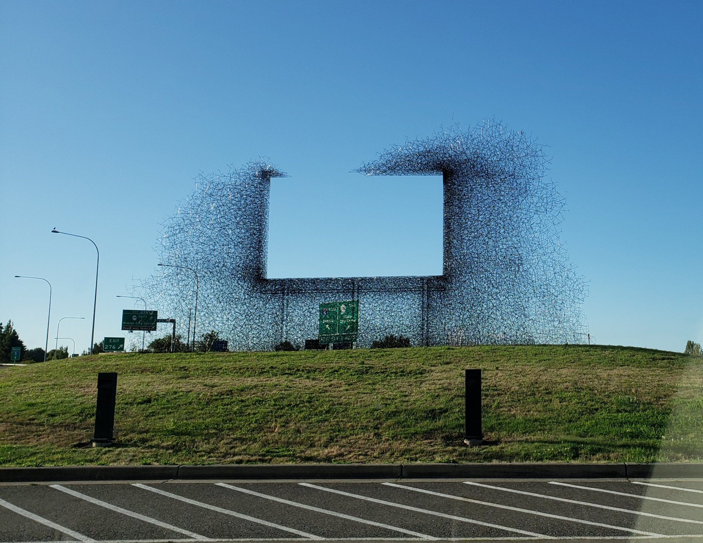
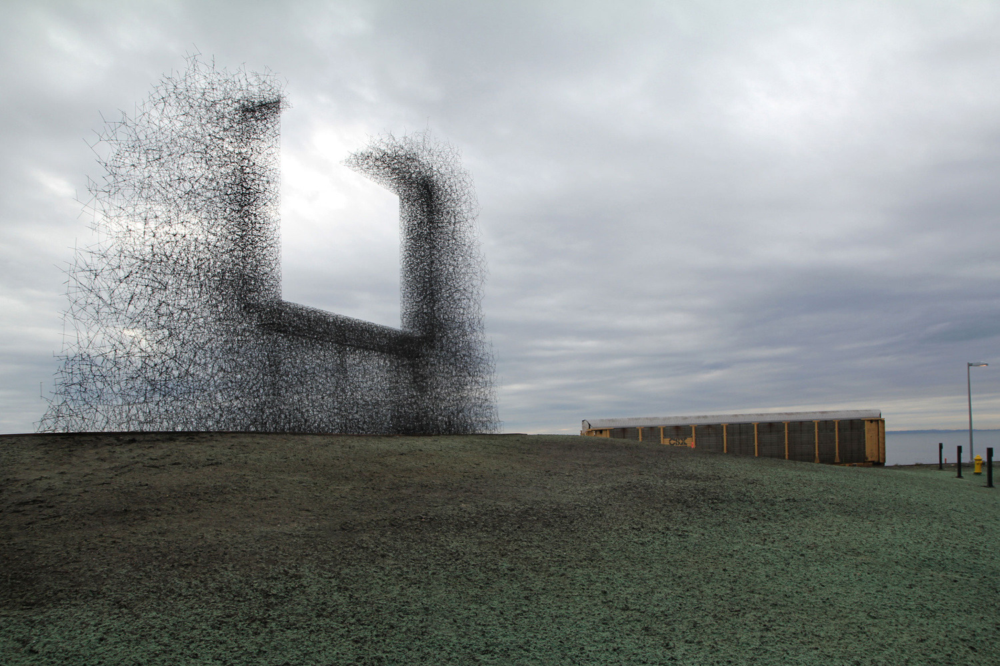
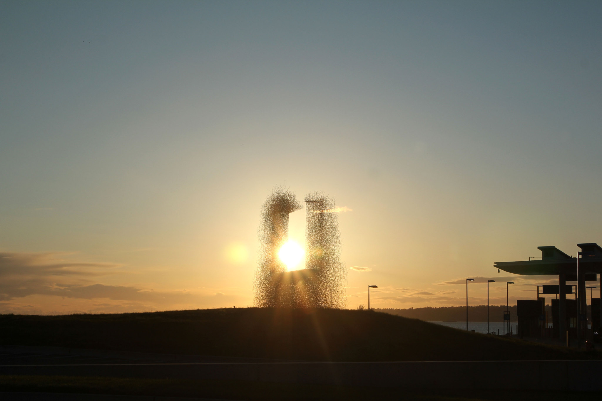
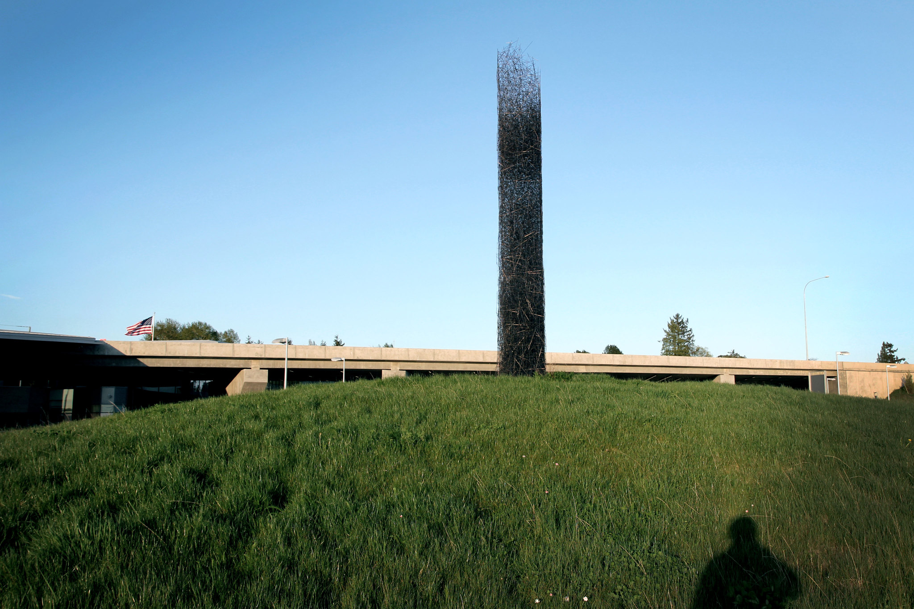
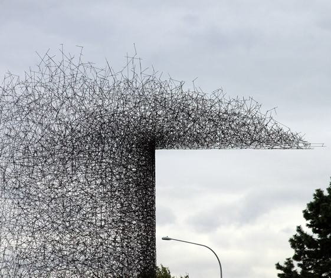
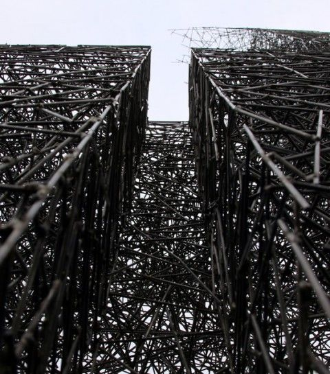
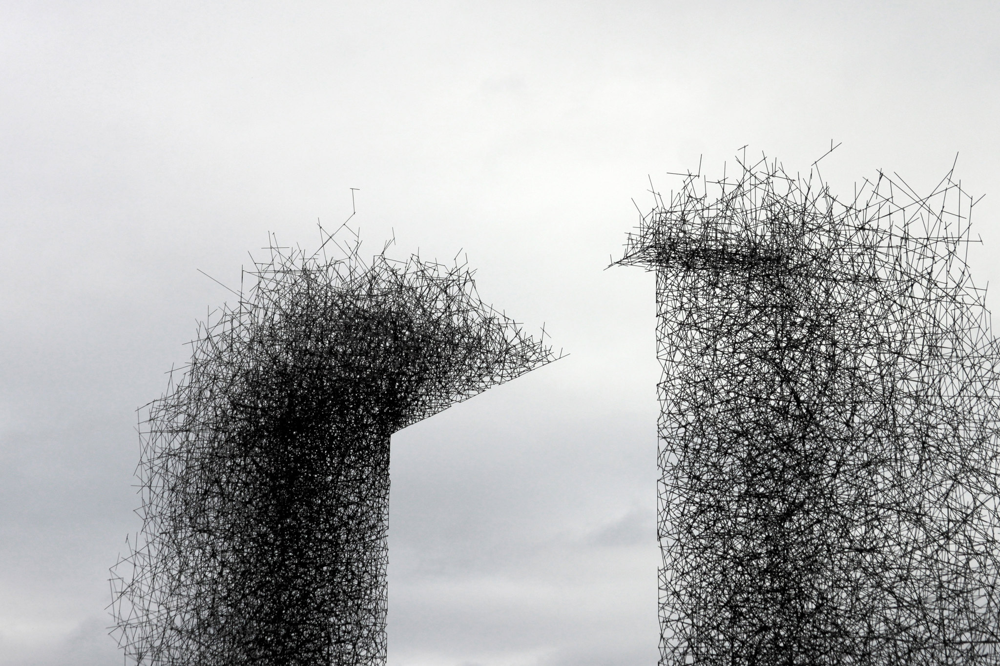

NON SIGN II is een reclamebord gemaakt in 2010 door Lead Pencil Studio en is gelegen op de grens tussen Canada en de VS, naast een snelweg. Het bestaat uit duizenden roestvrijstalen staven.
“NON SIGN II is a billboard created in 2010 by Lead Pencil Studio and is located on the Canada-US border, next to a highway. It consists of thousands of stainless steel rods.”
I thought that was birds